Work in progress, hastily compiled. Note that most of Perso-Arabic literature, i.e. the notable bejtexhinj poets like Nezim Frakulla, wrote with standard Ottoman characters. The difficult characters start arising with the efforts of rationalising the script to have a 1:1 phonetic correspondence with Albanian's sound system. Note also some of these characters may already be present in Unicode, and I haven't been able to find them. Peculiar character already in Unicode, or which can be achieved with combining characters, are momentarily ignored.
I will hopefully cover this more thoroughly with time, and add the things I may have missed. To have a more complete overview of the situation, I may want to collaborate with someone with access to the Turkish State Archives.
Abeja (1908)
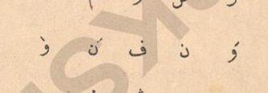
Abeja (1908), p. 2: Grave-like accent on ⟨و⟩ /y/, and acute-like accent on ⟨و⟩ /o/ and ⟨ن⟩ /ɲ/.
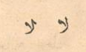
Abeja (1908), p. 7: ⟨ل⟩ with rightward tick /ɫ/ seen to contrast its tickless form. Resembles LAM WITH TAIL proposed by L2/26-125, although the tick is on the other side.
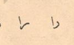
Abeja (1908), p. 7: Flattened variant of ⟨ر⟩, usually a graphical variant, here meaning /r/ and contrastring with its conventional form standing for /ɾ/. I remember seeing this codepoint mentioned somewhere, but I couldn't pin it down.
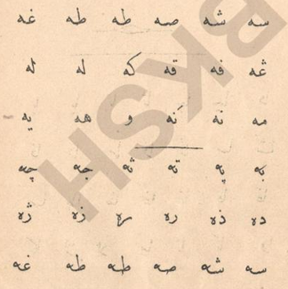
Abeja (1908), p. 8: Looped variant of ⟨ه⟩, usually a graphical variant, here contrasts with its conventional form, to differentiate between /e/ and /ə/.
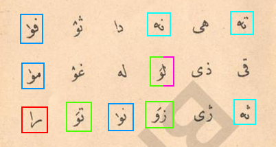
Abeja (1908), p. 11: [1] Ascending diacritic on wāw [2] Descending diacritic on wāw and nūn [3] Flattened rāʔ [4]Lām with rightward tick [5] Looped hāʔ
Voka (1911)
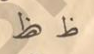
Voka (1911), p. 2: ⟨ظ⟩ with a small ⟨ص⟩ within.
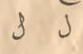
Voka (1911), p. 2: The two forms of ⟨ل⟩. It could be argued that this is to be identified as ⟨ݪ⟩ ARABIC LETTER LAM WITH BAR (U+076A).
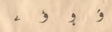
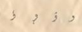
Left, Voka (1911), p. 2: Three different diacritics on top of ⟨و⟩ for the sounds /o/, /u/ and /y/, and then another entirely new character resembling a small ⟨ے⟩ for /ə/. Right, Voka (1911), p. 17: Same four characters in a cursive-like hand.
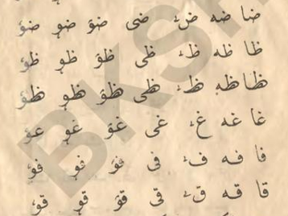
Voka (1911), p. 6: The /ə/ symbol, third column from the right, does not ligate.
Xhupi (1911)
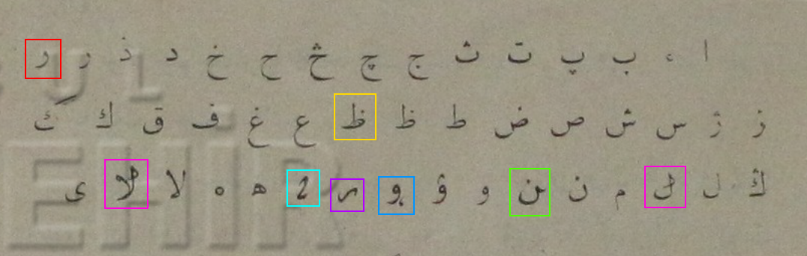
Xhupi (1911): [1]Rāʔ with tick above, similar to what is proposed in L2/26-125, except for the tick position. [2]Ẓāʔ with small ṣād within. [3]Lām with tick. [4]Nūn with tick. [5]Wāw with diacritic, /o/. [6] Persumably some sort of vowel. [7] Symbol for /ə/.
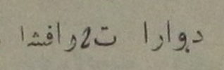
Xhupi (1911): Do ara të rrafsha.
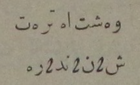
Xhupi (1911): Veshta e tret. Shënëndëre.
Q. M. (1912)
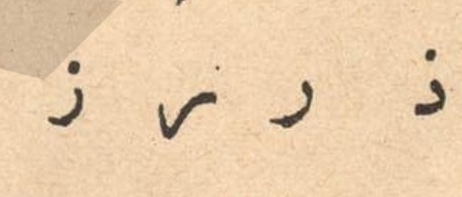
Q. M. (1912), p. 9: The two contrasting normal and flattened forms of rāʔ.
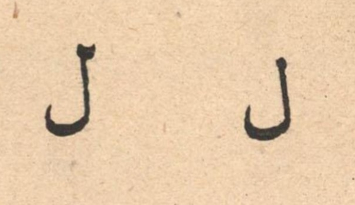
Q. M. (1912), p. 6: The two contrasting normal and ticked forms of lām.
Seydi (1912)
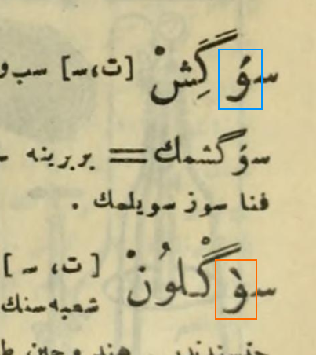
Seydi (1912), p. 582: Ottoman Turkish, the diacritics are used as lexicographical notation in headwords. The descending one stand for /y/ and the ascending diacritic stands for /ø/ .
Abeja (1913)
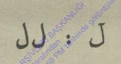
Abeja (1913), p. 2: The two contrasting normal and ticked forms of lām.
Worklist in chronological order
Boriçi, Daut (1861–1869), Elifba, Istanbul or Shkodër, all already encoded.